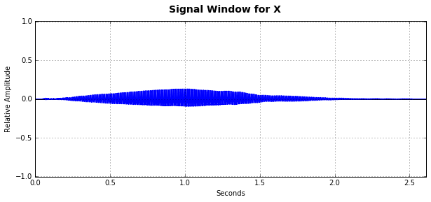
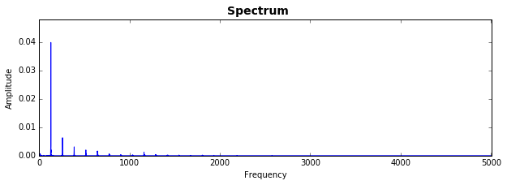

For this particular cello clip, we have a cellist playing an arco (bowed) C4 mezzo-forte. Compared to the violin clip, this note is played on a higher string because the cello has lower strings, so the sound is brighter and less harsh. In addition, there is a strong presence of vibrato, especially towards the end of the note. In addition, it has a darker sound than the other strings, so the attack phase is harsher.
From the spectrum and signal below, we note that the cello, compared to the violin, has an even slower ramp up for the attack phase. We have a .3 second attack phase, which is a linear rise for .3 seconds. This is then sustained for .4 seconds, with a top amplitude of .5 (due to the softness and mezzo-forte quality of the original clip), and then a release phase of .2 seconds and a half-life of .15 seconds.


We found the cello to be pretty hard to simulate due to the "richness" of its tone. The two clips sound pretty similar during the sustain phase, but we weren't able to catch some of the higher residual harmonics that were present in the original clip. The attack phase was difficult to read from the signal graph, and the release phase is a little abrupt compared to the original clip due the lack of a tapering toward the end. In addition, like the violin, we found it pretty difficult to simulate the vibrato that the original sound had - we attempted to adjust this by finding particular frequencies which would alter the sound and create more of a "wavering" sound to simulate the vibrato, but because vibrato isn't a constant or defined wavelength, we chose to keep the sound as is.